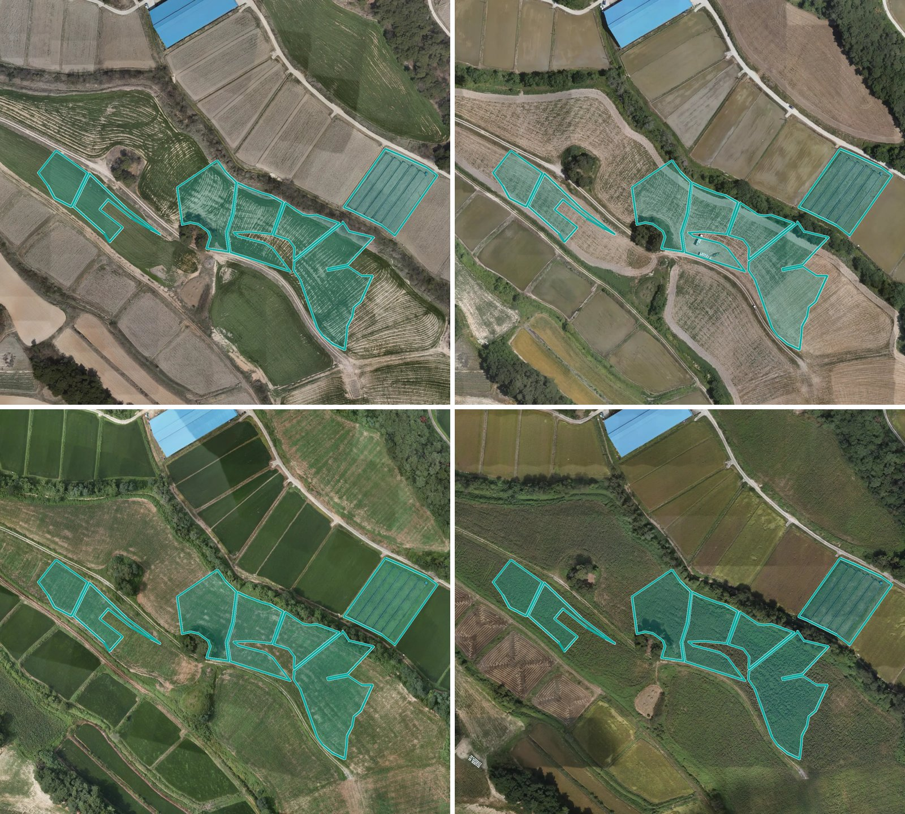
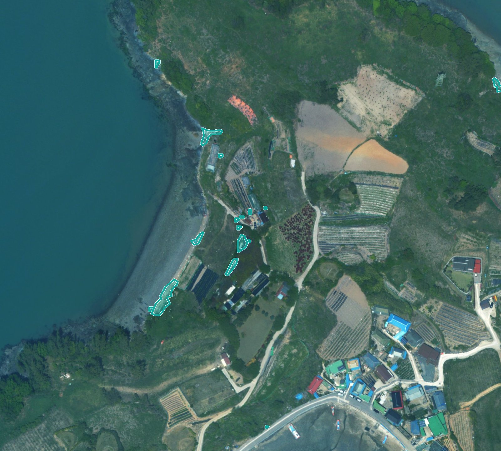
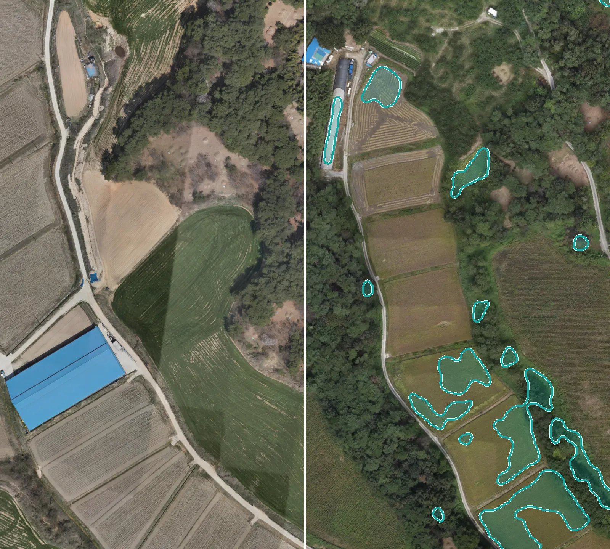

운영남원시 · 2026.10.01 기준
영농관리 행정서비스
경작·휴경·시설·전용을 판정해 확인할 필지만 남깁니다
1,035현장 확인 필요 필지 · 남원시
쓰이는 곳 운영 1 · 시범 4영상 드론·항공 50cm↓
자세히
서비스 카드를 골라 어느 지역이든 분석합니다 — 결과는 XI맵에서 봅니다

운영경작·휴경·시설·전용을 판정해 확인할 필지만 남깁니다
 시범
시범단동·다동 비닐하우스를 찾아 셉니다

운영해안 영상에서 쓰레기 군집을 찾아 수거할 곳부터 알려 줍니다
건물을 찾아 대장과 다른 필지를 골라냅니다

시범두 시점 영상을 비교해 신축·소실·식생 변화를 골라냅니다
들에 쌓인 곤포사일리지를 찾아 셉니다
주차장을 찾아 지목과 다른 필지를 골라냅니다
드론 영상에서 사람과 차량을 세어 혼잡을 보여 줍니다